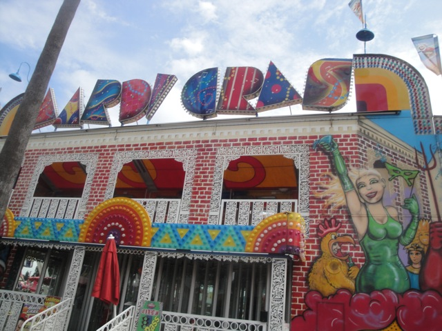
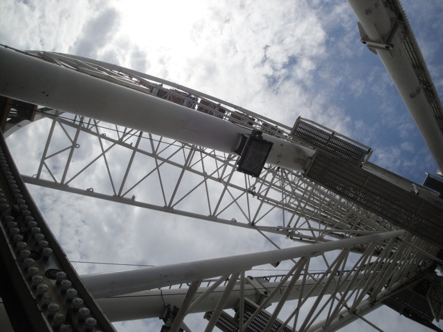
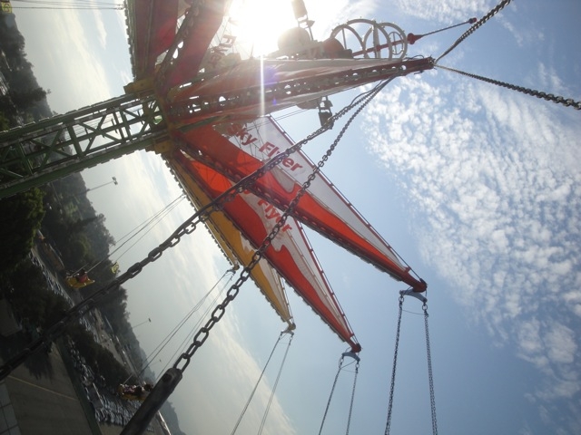
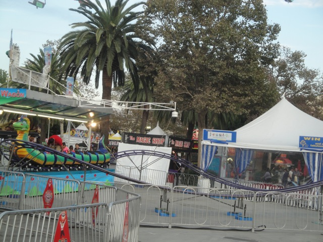

L.A County Fair 2012
All right. Its time for our yearly fair visit and once again, I decided to head on over to the L.A County Fair and check out some of the cool stuff that was going on over there. And while there were no Doobie Brothers or Typhoon this year, I still had a blast.
 Welcome to the L.A County Fair. We actually have good flat rides out here.
Welcome to the L.A County Fair. We actually have good flat rides out here.
 "Check out my cool new pink sunglasses."
"Check out my cool new pink sunglasses."
All right. The only bad part of the day was this god damn line. Man, I hated this stupid thing. It moved so slow and was filled with idiots including this one dumbass dad who spent 15 minutes bitching to the woman at the counter while his kid was running loose in the crowds. I really need to get a taser for situations like this.
I spy with my little eyes the two rides we came here for. =)
Yep, Tango was back at this years fair and this year, I was actually able to get lots of rides in due to having more people with me.
I've said it before and I'll say it again. One of the craziest flat rides out there.
And yeah. The other star flat ride at the L.A County Fair would be Speed.
 This flat ride is not only fast as hell, but it actually has some good flips. It almost seems like X2's first drop for pretty much the whole ride.
This flat ride is not only fast as hell, but it actually has some good flips. It almost seems like X2's first drop for pretty much the whole ride.
 After my Europe Trip this summer, I'm never eating Gelato outside Rome again.
After my Europe Trip this summer, I'm never eating Gelato outside Rome again.
Yeah. I tried the Deep Fried Watermelon last year. Meh, it was ok. But I've got much more insane stuff to try this year.
Ooh!!! A double decker carousel!!! We're here with our friend Alisa, a carousel enthusiast. So we had to ride.
Hey, it really is one of the best carousels I've ever ridden.
Come on Cody. You just know that you're the perfect age for Knight School (at least mentally). =)
"Jolly Jolly Jolly. I'm King Cody. Now give me something good to eat you bloody twat!!!"
Hey!!! A cupcake from the cupcake stand ought to be really good.
"One is not enough!!! Give me another one!!!!"
You know, I think we'd like to try a Frosting Shot. I mean, hey. Its just frosting. What can go wrong?
HOLY SH*T!!! THIS THING IS BOTH AMAZING AND HORRIBLE AT THE SAME TIME!!!! Its really good frosting, but at the same time, (I never thought I'd say this) but it's simply too much!!! Its too sweet!!!! It may not look like much in this photo, but Cody, Mac, and I split this thing three ways and I could barely finish my portion. It felt so disgusting and sweet and I wanted to run 10 miles just to burn off the assload of calories that thing had. That, and the fact that it gave Cody an insane sugar high that we should've medicated him for.
Because we're all dumbasses who are all gonna eventually get diabetes, we decided that a Frosting Shot just wasn't enough. So we got deep fried Cookie Dough on top of that. Holy Crap!!! One of the best deep fried foods I've had, but I was so full and over-sugarized that I could barely eat it despite its delicousness.
A log flume at a fair? Sure!! Why not!!!?
Maybe this wasn't such a good idea.

All right. Time for our first of MANY fun houses of the day.
Group Midget Photo everyone!!!!
What would a funhouse be without a little slide at the end? =)

Yes, we're gonna ride the huge Ferris Wheel at the L.A County Fair.
See!!! The cars are enclosed!!! That makes it fancy!!!
This ride is awesome!!! It's basically a sit down version of Tango on the ground, which is awesome by my standards. =)
Meh. The falling star here is just a falling star. Next!!!!
When you visit with a Carousel Enthusiast, you have to ride ALL of the carousels.
Yes. I already have this credit. I'm just sad and pathetic by nature.
These slides are HORRIBLE!!! They aren't that fast and they felt uncomfortable.
"Hows it going guys. I'm a zebra."
Oh boy!!! Its time for Mojo's Monkey Mania!!! Lets go find Mojo guys!!!!
"Umm, will someone please get these morons away from my cage please? Thank you."
This is for everyone I know who suffers from a fear of spiders. =)
This thing is gonna snap and attack me any second now.
MOJO!!!! NO!!!!!
Well, it looks like I found myself money for dinner tonight.
 "OH NO!!!!! I'M TURNING INTO A VEGAN!!!! SOMEONE HELP ME!!!!!!"
"OH NO!!!!! I'M TURNING INTO A VEGAN!!!! SOMEONE HELP ME!!!!!!"
 Alisa made sure we spent at least 30 minutes today with this owl, who is now our newest friend.
Alisa made sure we spent at least 30 minutes today with this owl, who is now our newest friend.
CLIFF JUMP!!!
Meh. Close enough for now.
I've been spoiled by Lex Luthor. I know its strong and has a good pop, but it just feels so small now.
This year, the Zipper was mixed. Some of the time, it was running really lame. But one of our rides actually gave us 4 flips in a row and more. =)
Hey. Why not take a ride on the Sky Flyer!!!?

It seems like a fun ride.
Oh yeah. Thats why. Its puny and has a crappy view.
Hey. Evolution was running pretty damn good this year.
Time for yet another fun house at the L.A County Fair.
You Fail.
 Good job Alisa. Now you ruined it for everyone.
Good job Alisa. Now you ruined it for everyone.
 HOLY SH*T!!! THERE'S ANOTHER CREDIT FOR ME TO GET HERE!!!!!
HOLY SH*T!!! THERE'S ANOTHER CREDIT FOR ME TO GET HERE!!!!!
 I had no idea that this existed last fair. So I'm glad that I managed to notice it this year and get an unexpected credit for me. =)
I had no idea that this existed last fair. So I'm glad that I managed to notice it this year and get an unexpected credit for me. =)
Cha Ching!!! Credit #361.

NOT A CREDIT!!!!!
What happens in Vegas ends up on Facebook.
I'm so glad I decided to drag my bed to the fair. Now I can take the cat-nap I desperately need.
Ooh. I want to pet the shark. I mean, what could possibly go wrong?
 "This cool device is gonna totally get me ripped."
"This cool device is gonna totally get me ripped."
HELP!!!!! I'M STUCK!!!!!!
Just jump already!!!!
Tonights a lovely night to take a ride on the skyride.
In case you can't tell, these aren't just ribs, but deep fried ribs. And yes, they really are freaking good.
All right. Time to save the best fun house for last. The Moscow Circus.
Hey!! Don't fall and f*ck yourself up like I did!!!
Um yeah. We decided to do the log flume at night.
 We decided to get a night ride on Speed now that the insane crowds are gone.
We decided to get a night ride on Speed now that the insane crowds are gone.
I decided to take another Zipper ride since I got an insane 6 flips ride earlier. But this time, it was super lame with just one flip. =(
 One last night ride on Tango (where Cody dropped his wallet, but luckily, a Carny caught it for him), and that concludes our crazy day at the L.A County Fair.
One last night ride on Tango (where Cody dropped his wallet, but luckily, a Carny caught it for him), and that concludes our crazy day at the L.A County Fair.
Home